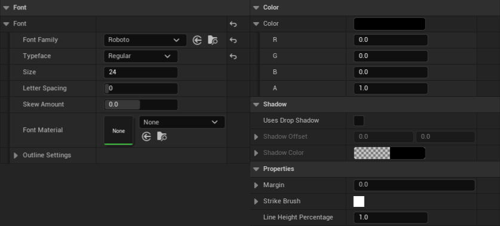
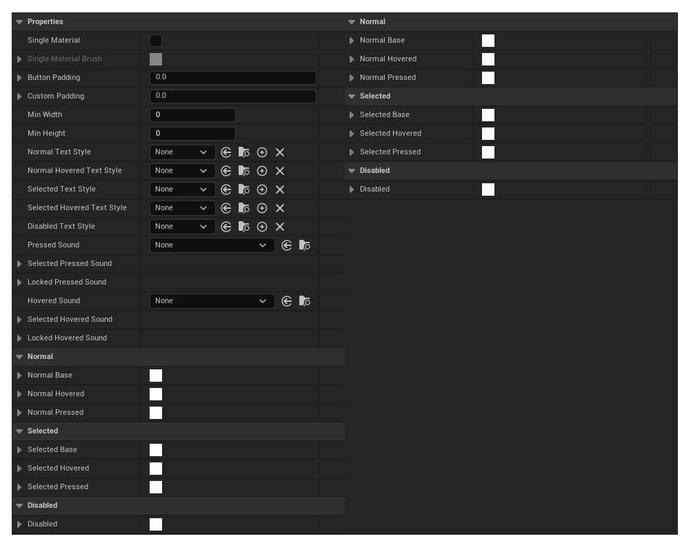

A review of Unreal's CommonUI
Introduction
When I started working with Unreal 2 years ago, I just came out of using a fairly low level engine where we had some precise control over the UI stack. So naturally my preferred way of working was to build things from first principle, relying on baseline Slate and UMG and building the tools and libraries I needed as they became necessary for the project. You have to keep in mind that Slate is very Keyboard & Mouse oriented, and although it's a general UI library, its core is built to make windows and tools for the unreal engine.
Anyways ! That means that when starting "from scratch" there's a few systems you'll have to build that are common to most games, just to name a few :
- A menu flow management system
- Handling input context switching
- A layer management system (HUD, vs Menus, vs Popup)
- A common keyboard/gamepad navigation system
- Some building block widgets for coherent styling (highlight borders, standardize text styles)
Now, if you've done a bunch of UI development, you might already be saying "uuh 'common to most games' is doing a lot of heavy lifting there buddy", and I agree ! User Interface lives in a weird space where some degree of standardization is expected, but all games are styled differently and have different needs. Looking at a Sim City game we can see a lot more complexity in the UI systems than an adventure game like Jack & Daxter.
[[Sim City UI pictures with description]] [[Jack & Daxter UI pictures with description]]
All to say that, as is often the case with generalisation, there is a challenge in making a game library that's sufficiently useful to save the user's time, and not too 'in your way' that you'll have to tear things out when it'll inevitably be lacking in one area or the other.
So how does CommonUI fares ? To avoid going into rants and stay on topic I'll limit my judgement to three criterions: the problem a feature is trying to solve, how the library immediately solve the problem, and lastly the extensibility and how easy it is to build on top. Of course this won't be an exhaustive list, I've cherry picked a few problems the library actually tries to solve and reasons why you might pick it up. Also, I'll specify when we find them, but we'll be seeing some systems in the context of their integration with CommonGame and Lyra, as it's usually how most users would be introduced and guided through using CommonUI.
With that said ! Let's dive in 😄
Styling
Let's start slow and talk about styling. There are two goals to styling, form and function, and good UX dictates that the function informs the form. So derived from that, you cannot dissociate opinions about functions, which is a fairly abstract thing (what does being a button means, what does this text size relative to this other one tell the user), from the form (the concrete sets of variables you can modify on a widget, color, size, visibility etc...).
So what problem is a styling library solving ? It should allow to trivially define the set of functions a widget has, and provide a visual definition of that function. In more concrete terms, it should help the user in understanding at a glance what are the different things they should consider when making a widget of a certain type (as a Button has a hover and a pressed state, or a TextBlock is a title, a paragraph...), and how they can meaningfully map those abstract states to a concrete set of variables on their widget (color, visibility, size).
Reusability of styles is often brought up as a requirement of a styling library, but I don't think that it's truly a feature in practice. If you plan out your design properly you'll naturally end up with reusable components, unrelated to the fact that you'd be using a styling library or not. Now they can help with reusability, as you'll be thinking about related functions of widgets in context, but they don't solve reusability. What they should definitely not do is hinder reusability, and we'll see that as a criterion of extensibility.
With that said, let's see what CommonUI provides.
Text Style
UCommonTextStyle is a data blueprint object that's usable in conjunction with UCommonTextBlock that'll help define its properties. At its core it just externalizes some of the properties you might share between a bunch of textblock in your game into an object that you can freely reference.

As you can see the list of properties is fairly straightforward. The object itself doesn't define any function or allow you to do something dynamic with the style itself, but it's good enough for a start. With inheritence it's easy to cascade some styles, so for example you might have a Title style, then derive it for a more contextual red title in some screens.
So the neat thing is it's immediately usable, and it's simple enough that it doesn't come with strings attached. The bad thing is it's really too simple, it's just an externalisation of the standard properties of a textblock, plus some machinery to allow text blocks to reference the style and update their actual property to reflect the object. You can't compose style together, for example it'd be easy to imagine having a "Red" style and a "H1" style and tell the textblock to combine the two, it'd give more flexibility and allow for more atomic style elements... But anyway, it's good enough to be immediately useful and helps us structure text styles in an interesting way, the downside is that you can't setup your textblock, and then create a style from there. You have to make a "new thing" first, and set it up for the context you need. It's fine when everything has been designed up front but it gets annoying when you're iterating or want to try some quick and dirty things.
At a baseline it does locks you into using UCommonTextBlock, which isn't great. It's about 600 lines of cpp for the feature at a glance, so a little outside of the ballpark of something I'd just rewrite, but not that far away that I wouldn't copy paste it in my own file to adapt it for my own use. Which makes it easily extensible in my book.
Button Style
Button styles follows more or less the same pattern but

The style allows to define some simple properties and clearly delineates and condense the possible states of a button (default, hover, etc...). It gets some bonus points for handling sounds too ! Even though there's some caveats we'll get into... Right now.
What's the issue ? We should be considering that feature in context of what it's trying to solve. Being able to easily define a style, and centralize what a button looks like in a way that makes it simple to edit. But fundamentally, what is a button ? We first have to recognize that there's simply not a single definition of what a "button" is, just like there's not a single definition of a "chair". We can agree on some basic function, it's a thing you push, and pushing it starts some process. Translating that to computer term, what does it means to push a button ? Moving the cursor on top and clicking ? React on mouse down or mouse up ? What if I'm with a gamepad, would I move a virtual cursor or rely on some cardinal navigation system ? What shoudl happen if I move my cursor on a interactible widget and press space ? Simulate a left click or is it a whole other interaction ?
You might just say those are systemic questions that we can analyse and come up with a best solution, but from my experience any generic rules you might come up with will end up needing addendum for this or that screen or situation.
Does it mean we can't encode what a button is, and we'll endlessly solve case by case issues ? Of course not, but it does mean that any attempt to rigidify blindly will inevitably end up creating friction points when we'll went to amend.